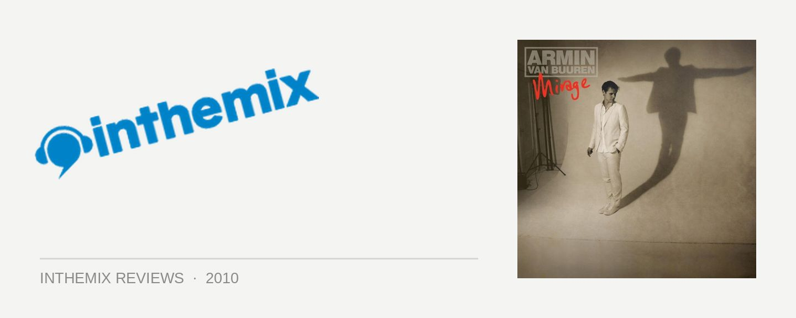

Armin Van Buuren - Mirage
Voted the world’s #1 DJ for several successive years, Armin van Buuren faces the weight of expectations every time he steps up to the CDJs. With the release of a new artist album though, he’s fronting up to a different set of expectations entirely – that it’s not going to be very good.
As a DJ he’s one of dance music’s most versatile performers, and he led trance through its creative renaissance several years ago into the solid (if a little bumpy) place that it finds itself in today. As a producer though, he lost his edge to the young guns a long time ago. His last album Imagine was a lukewarm collection of great melodic ideas wrapped up in uninspired production, in a package that was forgiveable only because it was Armin. It was surprising how well a lot of it worked on the dancefloor in the context of his ‘Armin Only’ extravaganza, but what was most telling was how next-gen producers like Martin Roth and Myon & Shane54 managed to transform his ideas into something much better with their remixes. So what awaits us on Armin’s latest opus Mirage?
From the opening moments, you’ll feel a cringe creeping over your face. The introductory medley Mirage is an embarrassingly overblown melting pot of melodrama – sad sirens singing, ascending high-pitched synths, string ensembles, and even a heavy metal guitar breakdown… It’s all in there. It’s so overdone it could be passed off as Armin Lloyd Webber composing a grand introduction to his tranced-up version of ¬Jesus Christ Superstar, that’s how far it tips into musical theatre.
What follows over the next half of the album is an inoffensive and slickly produced serving of pop trance. Former Spiller glamour Sophie Ellis Bextor fronts up for the album’s next single Not Giving Up On Love; drenched in syrupy strings and tinkling pianos, it’s a perfectly functional slice of radio-friendly house, and it’s a theme repeated often throughout Mirage with a cast of female lovelies like Nadia Ali. However, it’ll do nothing to restore Armin’s waning credibility with the trance scene Mafioso, who are already baying for his blood.
It all might all sound a little bleak, but a lot of consideration has been shown to shifts in tempo across Mirage, and there’s definitely a sense of the epic going on. We’re treated to a few deeper and quite effective First State style Balearic offerings that fall well outside the euphoric trance spectrum, while Take A Moment is the album’s first excellent tune, a collaboration with Josh Gabriel’s new Winter Kills project that starts deep with the focus on the gorgeous vocals, before ascending into one of Armin’s classic build-ups, with the emotion coming off as sincere as opposed to contrived.
Far from abandoning the hands-in-the-air moments, Armin hits his first euphoric note in Coming Home (with a guitar solo courtesy of Ella van Buuren, naturally). He keeps us in the clubs for the progressive trance of These Silent Hearts and Orbion, with some solid production work that takes these songs the places they need to go – even if they’re predictable every step of the way. Those wimpy, indie-lite vocals of Adam Young from Owl City on Youtopia actually brings a lovely texture to the album’s close, and like a lot on Mirage, you’ll find yourself enjoying it more than you maybe feel you should.
Most curious for Mirage is the quote splashed across the liner notes that implores you to, “Never be a prisoner of your own style”. It’s like Armin could hear the howls of derision erupting when he veered out of familiar territory. He’s only got himself to blame for feeling boxed in though, as he’s never been afraid to splash the word ‘trance’ across everything he does: his radio show, his record label, his compilations.
However, if you remove Mirage from the expectations attached to such a release, from any limiting notion of what it ‘should’ have sounded like, then it’s actually Armin’s most realised album to date. Moving from the bombast of the opening, into the vocal pop trance that follows, through to the peaktime club tunes of the final act; it’s easily got a wider scope than anything he’s done to date.
Perhaps the somewhat ‘adult contemporary’ sound of Mirage is exactly where Armin’s heart lies, and it’s the music he wants to make, instead of carbon copying what’s featured in his DJ sets. Like a trancified Rob Thomas or Michael Bublé, if you will.
Regardless though, Mirage is not an album that’ll be embraced by the trance underground. If you can take this into account, and ignore the ever-present sense of the ludicrous, there’s plenty to enjoy here. Personally though, I’m hoping Armin leaves it in his record box at ‘Armin Only’ on New Years Eve.
Mirage is out now on 405 Recordings.